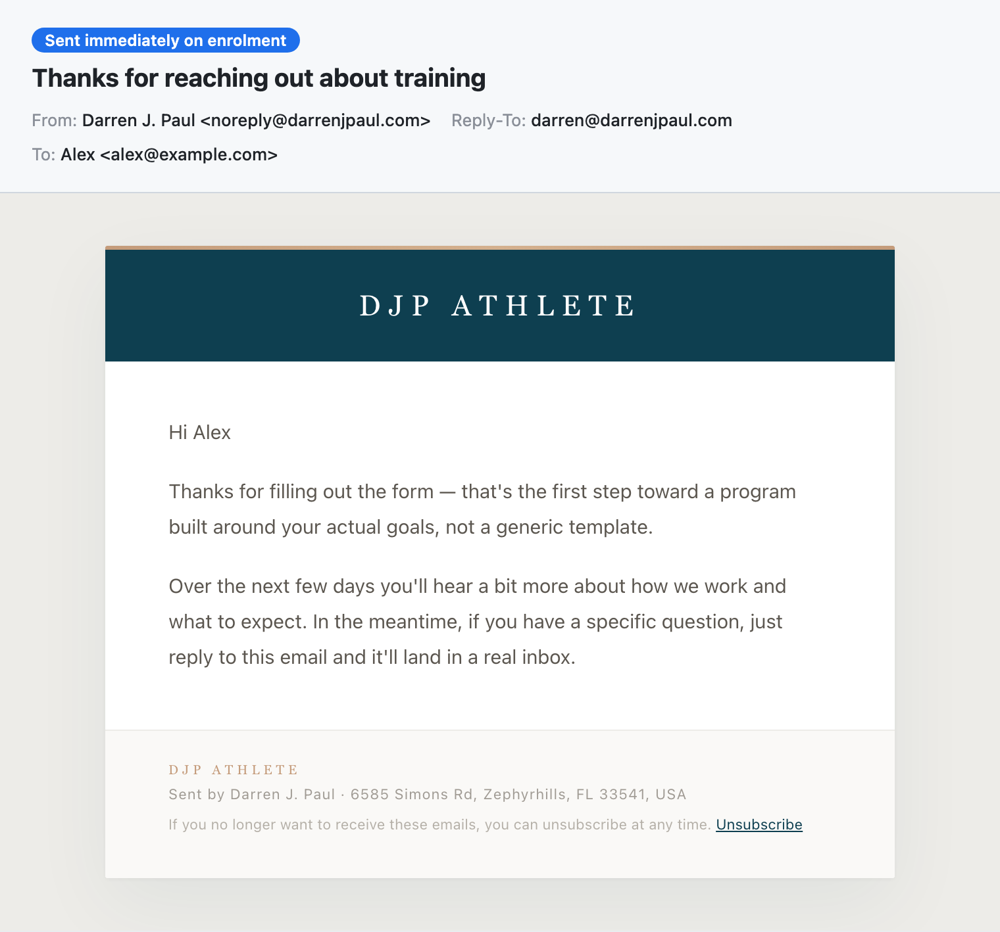
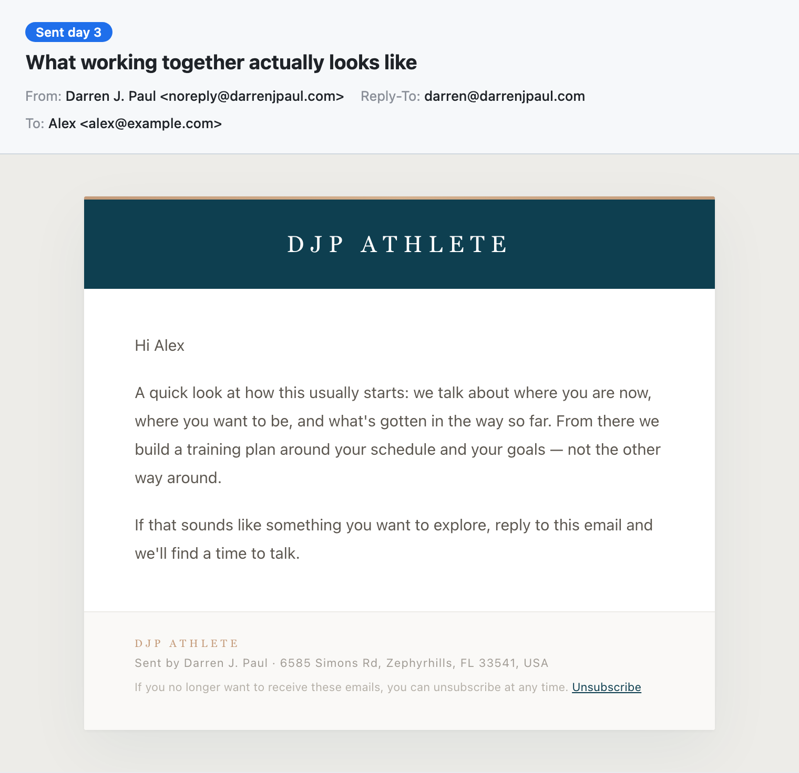
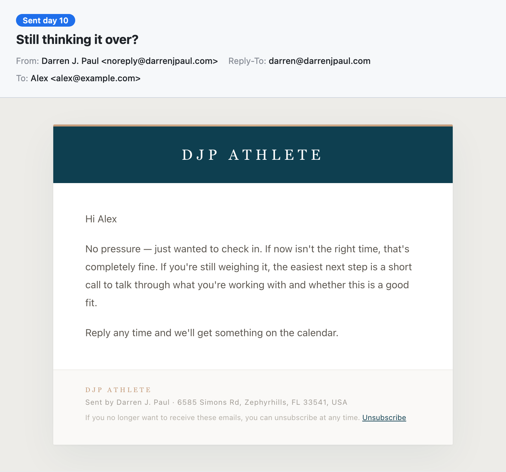

What a lead receives after submitting a funnel form, now live in production.
Each capture's header strip shows the real send metadata; the body below it is the exact
rendered email. The layout follows the house email brand from lib/email.ts:
the dark Green Azure header band under the Gray Orange accent strip, the letter-spaced
Lexend Exa wordmark, Lexend Deca body copy, and the warm footer treatment.
sequence_steps and
business_settings rows were read from the production database and passed through
renderSequenceEmail — the same function the tick runner sends with. The
step-*.html / step-*.txt files beside this page are the exact HTML and
plain-text parts byte-for-byte; nothing was mocked or re-typed. The lead is a sample
("Alex"), and the unsubscribe link carries a visibly fake PREVIEW-TOKEN so this
preview cannot unsubscribe anyone.
Sent immediately when the lead submits a funnel form. Safe as an immediate send: the existing funnel notification goes to the coach only, so this is the first and only automated email the lead gets at that moment.

Sent 3 days after enrolment (4,320-minute wait step).

Sent 10 days after enrolment (a further 10,080-minute wait step). The sequence then stops — three emails total, no more follow-ups.

Every email carries the CAN-SPAM footer: the DJP Athlete name, the physical
address from lib/business-info.ts, and the unsubscribe sentence whose exact
wording is also stamped onto the consent row when someone unsubscribes. A real send signs
the unsubscribe token per contact. If a lead replies, it goes to
darren@darrenjpaul.com. To reword any of these, edit the
sequence_steps rows — body_rendered on each sent message records
what was actually delivered, so history stays truthful across edits.